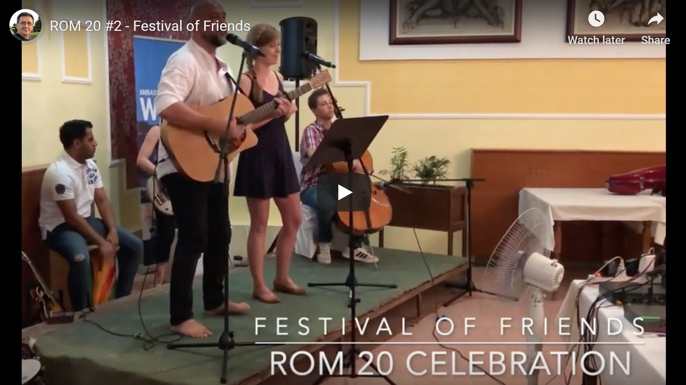
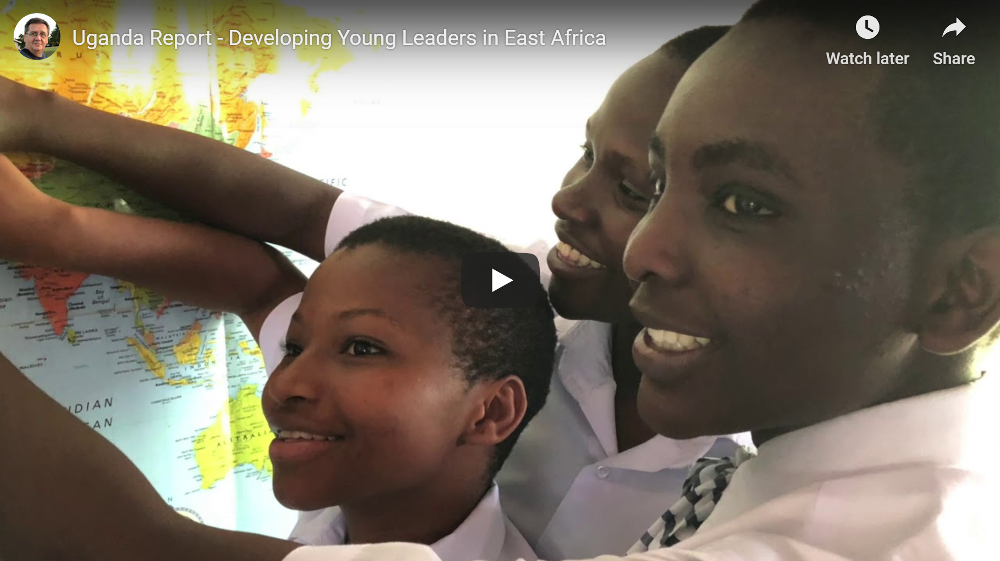
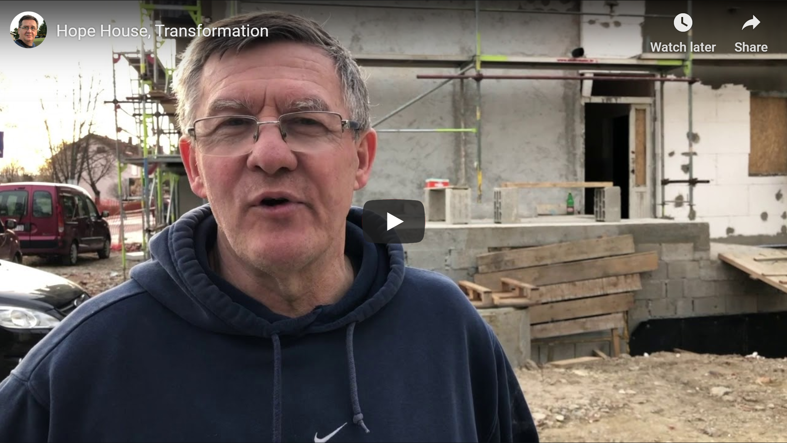

Let me share five video reports we have produced in 2019 that highlight several aspects of the Renewing Our Minds (ROM) ministry in 2019 as well as partnerships connected with ROM in various ways. ROM20 #3, Jesus Plus Nothing: Since its birth in 1999 ROM - Renewing Our Minds ministry has always remained faithful to …
Preparations and registrations are well on the way at this time for the 1999-2019 ROM (Renewing Our Minds) Celebration Gathering, to take place in Ohrid, Macedonia, 29thJuly to 5thAugust, 2019. This leadership and reconciliation gathering, under the banner “20 Years of Empowering Ambassadors for a Better World,” will summarize the first 20 years of contribution …
Dear Friends, In October last year the organizers of the ROM (Renewing Our Minds) Integration Forum released the Croatian edition of the Memorandum on the ROM Integration Forum, with conclusions and recommendations for Croatian government and non-government organizations and institutions, as well as for EU and international organizations that could benefit from the findings of …
For many years this house was a home of drug addicts and prostitutes. After several moths of hard work and some opposition the work of the building transformation is almost complete. Mihal Kreko shares the latest video update. Hope House March 2019 Report...
John Masuku, a seasoned and senior radio broadcaster, producer and journalist in Zimbabwe, and a member of the international community of ROM - Renewing Our Minds friends, sent us today the following statement issued jointly by a number of prominent media organizations in Zimbabwe. Since the Zimbabwean Government has shut down schools, banks, roads, transportation, media, …
Three years ago the Renewing Our Minds volunteers witnessed the incoming waves of refugees entering Europe via the Balkan route, and crossing Serbia and Croatia. We were only a small part of a much bigger effort that engaged churches, faith based organization, non-profits and individuals who dedicated days, weeks and months, and some of them …

Jesus Plus Nothing: Since its birth in 1999 ROM – Renewing Our Minds ministry has always remained faithful to its message of friendship, reconciliation and sacrificial leadership. But what made its ministry unique and effective was its focus on Jesus. For all those years it has been on my heart, as its director for the past eighteen years, and on the hearts of the core team to make sure Jesus remains the center of the ROM ministry, and keeps informing everything we are, do and teach at ROM. This video features several short Jesus centered highlights I shared at various ROM gatherings in the past years. I’ve enjoyed leading ROM very much but of all aspects of ROM leaderships I loved teaching about Jesus the most. I’m confident that under the leadership of Bojan Ruvarac, ROM’s new director, this precious ministry will continue to be firmly rooted in Jesus. This video is enhanced with a random selection of photos depicting many moments in the 20 years long ROM history.
Festival of Friends: 2019 was a special year in the history of ROM – Renewing Our Minds. 200 participants, ROM alumni, gathered in Ohrid, North Macedonia at the end of August to celebrate the first twenty years of the ROM ministry. ROM 1999-2019 Anniversary Celebration Gathering was about reenergizing, sharing, empowering, thanksgiving, peace building, reconciliation, leadership of service, and following Jesus – which have been the core values of ROM since its birth in 1999. ROM 20 was also a festival of friendship, joy and laughter, and lots of music.

Empowering Generations: 2019 was a special year in the history of ROM – Renewing Our Minds. 200 participants, mostly ROM alumni with families and children, gathered in Ohrid, North Macedonia at the end of August to celebrate the first twenty years of the ROM ministry. ROM 1999-2019 Anniversary Celebration Gathering was about reenergizing, sharing, empowering, thanksgiving, and in reminding the ROM alumni of the values of peace building, reconciliation, leadership of service, and following Jesus – which have been the core values of ROM since its birth in 1999. This is the first of several short videos featuring different aspects of the ROM 20 Celebration Gathering in Ohrid, North Macedonia.
Uganda Report: You must see our Uganda Report! just over a month ago Bojan Ruvarac and Tihomir Kukolja were visiting Uganda. We met with the leaders of the Africa Youth Leadership Forum (AYLF) from Uganda and Eastern Africa. We shared our experiences of work with the Renewing Our Minds (ROM) ministry and our governing organization Forum for Leadership and Reconciliation. Our African friends shared their experiences with AYLF and Cornerstone Development. We were impressed, humbled and inspired at the same time as we watched how young people of Uganda and East Africa are becoming transformed into the future leaders of this region thanks to the dedicated work of the African youth Leadership Forum and Cornerstone Development, and their vision of “nurturing a new breed of African leaders”. Out of our visit and time spent with our friends from AYLF a new vision has emerged: AYLF is seriously planning to move forward with an African version of ROM. Watch this video and be inspired!
House of Hope March 2019 Report: For many years this house was a home of drug addicts and prostitutes. After several moths of hard work and some opposition the work of transformation is almost complete. Unfortunately, since the time this video report was made the work on the house restoration has faced some major, malicious opposition.

The Homeless of the World, Where Are They Now?Three years ago the Renewing Our Minds volunteers witnessed the incoming waves of refugees entering Europe via the Balkan route, and crossing Serbia and Croatia. We were only a tiny part of a significant effort of many groups, churches and non-profits which worked diligently and passionately for months to make the lives of refugees on the move more bearable. With the featured video we are going back in time intent at not letting this precious experience vanish. Even more importantly, we want to ask a question: “Where are they now? Are they still wondering from one country to another, unwelcome, shifted and tossed around? Are they alive? Are their families together? Are their children safe?” Listen to the real observations made by some who volunteered along the refugee trail in Serbia and Croatia three years ago. This is a must-watch video feature. A video feature of Ambassadors for a Better World!